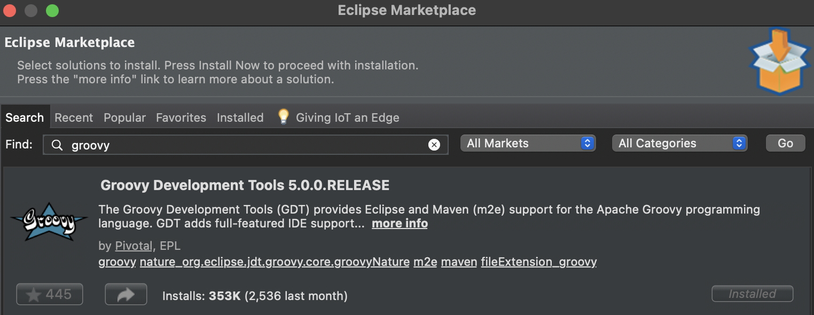
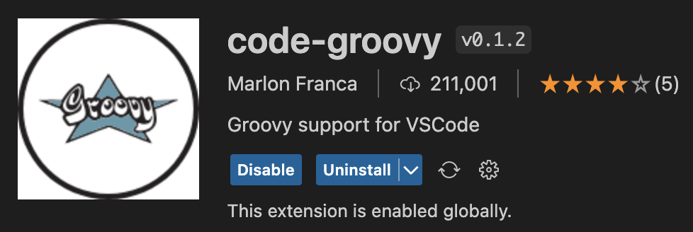
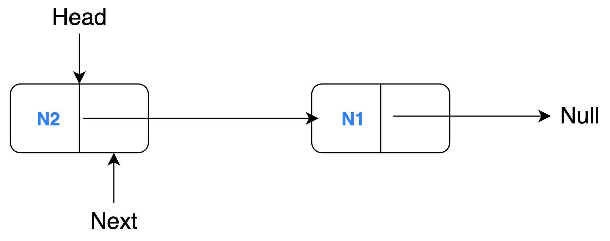

YAMTL
Yet Another Model Transformation Language (YAMTL) is an expressive model-to-model transformation language that is offered as an internal domain-specific language (DSL) of Java/Xtend. YAMTL was found to be the fastest incremental model transformation tool, in general, for dealing with complex transformations between AADL models according to independent industrial case study. YAMTL is available as an IDE-agnostic Java dependency that augments the Java ecosystem with model analysis and model transformation capabilities that are not yet available in the latest version of Java. YAMTL transformations can be developed, debugged and analysed using the preferred Java IDE of choice and they can build upon existing Java dependencies in order to automate complex tasks. YAMTL operates on models defined with the Eclipse Modeling Framework.
Installation
YAMTL uses Gradle as build automation tool and can be executed from Java-SE 17. To add YAMTL to your own project you must configure the Gradle build script (build.gradle) of your project.
Add the following repository:
repositories {
maven{ url 'https://github.com/yamtl/yamtl.github.io/raw/mvn-repo/mvn-repo/snapshot-repo' }
mavenCentral()
}
Then declare the dependencies:
dependencies {
implementation "org.eclipse.xtend:org.eclipse.xtend.core:2.31.0" //package versions may be deprecated in the future
implementation 'yamtl:yamtl:0.4.3'
implementation 'yamtl:untyped-models:0.0.25'
}
Workspace Configuration
To use YAMTL appropriately, the IDE must be properly configured. Let's check out the required configurations for some of the most popular IDEs: Eclipse, IntelliJ, and VSCode.
Eclipse
Open Eclipse IDE and head over to Help → Eclipse Marketplace. Enter "groovy" and install Groovy Development Tools 5.0.0.RELEASE to be able to run groovy scripts.

Before you run any tasks, make sure your project is using JDK 17 or higher.
How to change the Java version in Eclipse
To change your JRE, head over to Eclipse → Preferences → Java → Installed JREs → Choose Java SE 17 or higher
Now you should be ready to use YAMTL in your modelling projects.
IntelliJ
Head over to IntelliJ IDEA → Preferences → Plugins and search for Eclipse Groovy Compiler Plugin and install it.

Similarly, search for "gradle" and install the Gradle plugin from JetBrains. Restart your IDE to apply the changes.
Ensure the project is using JDK 17 or higher.
How to change the Java version in IntelliJ
To change your JDK, head over to IntelliJ IDEA → Preferences → Build, Execution, Deployment → Build Tools → Gradle. Then, select a Gradle JVM that is JDK 17 or higher.
All necessary configurations are now completed!
VSCode
First, a groovy support package must be installed. code-groovy extension enables Groovy support for VSCode. In VScode, click on Extensions and search for "code-groovy". Install the extension that looks like the one below.

Also, install the Gradle for Java extension published by Microsoft to run the Gradle scripts in a neat interface.
Make sure the workspace is using JDK 17 or higher.
How to change the Java version in VSCode
To change your JRE, head over to Code → Preferences → Settings and search for "jdk". Check the Gradle Java: Home setting to see if the path points to a location of JDK 17 or higher (update the JDK version if it is any lower).

The congifurations are completed! Check out the YAMTL example below to see a simple YAMTL project.
YAMTL example
To showcase the usage of YAMTL, let's see a simple example where a linked list with 2 nodes (N1 and N2) is reversed through model transformation.
Source Model

Target Model

Download the linked list reversal project (ZIP file). You can unzip and import the project into an IDE of your choice. This documentation will provide details on how to setup the example project on Eclipse, IntelliJ and VSCode.
YAMTL uses groovy scripts to define the models and transformations so generally any IDE will need some Groovy support through extensions/plug-ins. Make sure to do the necessary steps found in the Workspace Configuration section of this page before you run the project.
Eclipse
Unzip the downloaded project. In Eclipse, click on File → Import → Existing Projects into Workspace → Select root directory → Finish. This will import and load the project in the IDE.
Right click on src/test/groovy/linkedListReversal/ReverseLinkedListTest.groovy then Run as → JUnit Test. Once the test is completed, a new outputList.xmi will be generated in the model directory. Examine this file and notice if the linked list has been reversed.
IntelliJ
Within IntelliJ, go to File → Open and open the project.
Right click on src/test/groovy/linkedListReversal folder then 'Run Tests...'.
Alternatively, click on the green run button in the top bar to run Tests in 'yamtl-linkedlistreversal' which builds the project and generates an outputList.xmi in the model directory.
Examine this file and notice if the linked list has been reversed.

VSCode
In VSCode, import the project by doing File → Open.
After you have imported the example project into the workspace, click on the Gradle icon in the left sidebar. Then perform Tasks → build → clean. Do Tasks → build → build to build the entire Gradle project (it also runs the ReverseLinkedListTest.groovy file).

Once the project is successfully built, an outputList.xmi will be generated in the model directory. Examine this file and notice if the linked list has been reversed.
Created: July 18, 2023